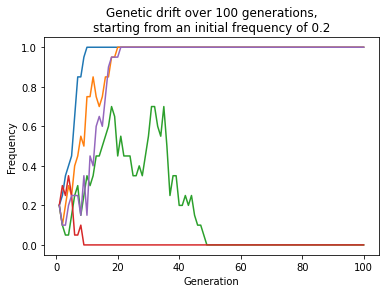
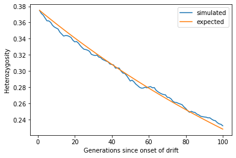
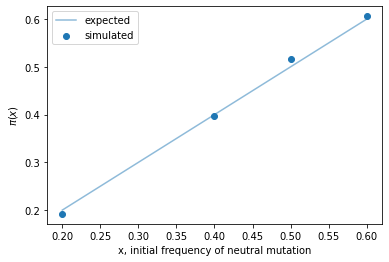

Genetic drift at a locus with two alleles¶
import numpy as np
import matplotlib.pyplot as plt
N = 20
p = 0.2
np.random.seed(666)
f, ax = plt.subplots()
for pop in range(5):
freqs = [p]
for g in range(99):
pn = np.random.binomial(N, freqs[-1], 1)[0]/N
freqs.append(pn)
ax.plot([i+1 for i in range(100)], freqs)
ax.set_xlabel("Generation")
ax.set_ylabel("Frequency")
ax.set_title(f"Genetic drift over 100 generations,\nstarting from an initial frequency of {p}");

import math
import numpy as np
import matplotlib.pyplot as plt
N = 100
p = 0.25
simlen = 100
np.random.seed(42)
def geth(freqs):
return 2*freqs*(1.-freqs)
nreps = 500
sumh = np.zeros(simlen)
for pop in range(nreps):
freqs = [p]
for g in range(simlen-1):
pn = np.random.binomial(2*N, freqs[-1], 1)[0]/(2*N)
freqs.append(pn)
sumh += geth(np.array(freqs))
f, ax = plt.subplots()
expected = np.array([2*p*(1.-p)]*simlen)
t = np.array([float(i) for i in range(simlen)])
expected = expected*(1. - 1/(2*N))**t
meanh = sumh/nreps
ax.plot([i+1 for i in range(simlen)], meanh, label="simulated")
ax.plot([i+1 for i in range(simlen)], expected, label="expected")
ax.set_xlabel("Generations since onset of drift")
ax.set_ylabel("Heterozygosity")
ax.legend();

import math
import numpy as np
import matplotlib.pyplot as plt
N = 100
p0 = [0.2, 0.4, 0.5, 0.6]
simlen = 100
np.random.seed(153247)
nreps = 500
up = []
for p in p0:
nfixed = 0
for r in range(nreps):
x = p
while x > 0 and x < 1:
x = np.random.binomial(2*N, x, 1)[0]/(2*N)
if x == 1.0:
nfixed += 1
up.append(nfixed/nreps)
f, ax = plt.subplots()
ax.scatter(p0, up, marker='o', label="simulated");
ax.plot(p0, p0, alpha=0.5, label="expected")
ax.set_xlabel("x, initial frequency of neutral mutation")
ax.set_ylabel(r'$\pi (x)$')
ax.legend();
